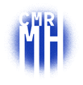

Informer et orienter
Diffuser des informations sur la maladie et des repères pratiques et sociaux, pour les personnes concernées, leur entourage et les professionnels.

Maladie de HuntingtonCentre de référence · MarseilleINFORMATION ET SOUTIEN ASSOCIATIF
L’Association Huntington France (AHF) accompagne les personnes concernées par la maladie de Huntington et leurs familles. Elle s’appuie notamment sur des délégations régionales et des antennes de proximité.
Consulter le site de Huntington FranceLE RÔLE DE L’ASSOCIATION
Diffuser des informations sur la maladie et des repères pratiques et sociaux, pour les personnes concernées, leur entourage et les professionnels.
Proposer des ressources de soutien et des espaces d’échange pour aider les familles et limiter l’isolement.
Contribuer à la recherche scientifique sur la maladie de Huntington, avec l’appui d’un conseil scientifique.
Faire connaître la maladie et les besoins des personnes concernées auprès du public et des institutions.
L’accompagnement associatif complète le parcours de soins. Les décisions de diagnostic, de traitement et de suivi relèvent de l’équipe médicale.
Présentation d’après les missions publiées par Huntington France. Informations consultées le 28 septembre 2026.